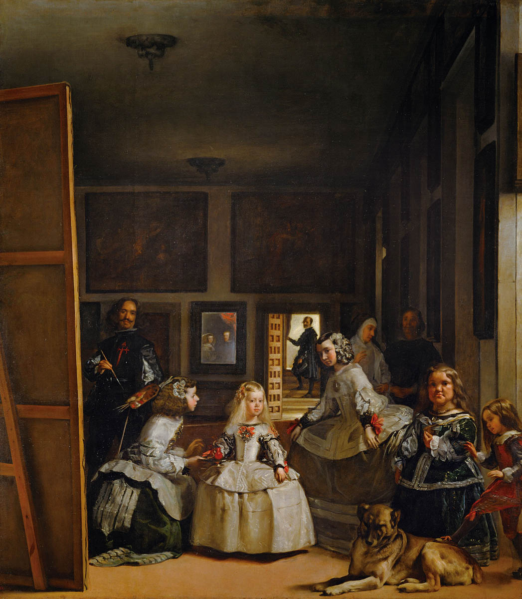
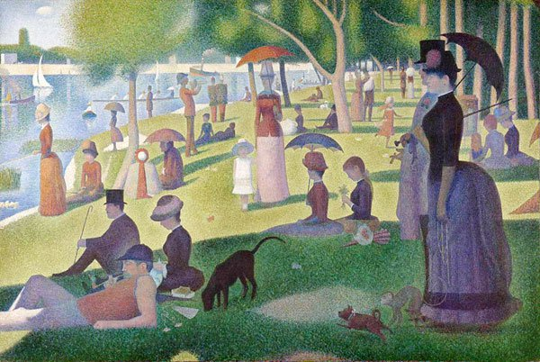
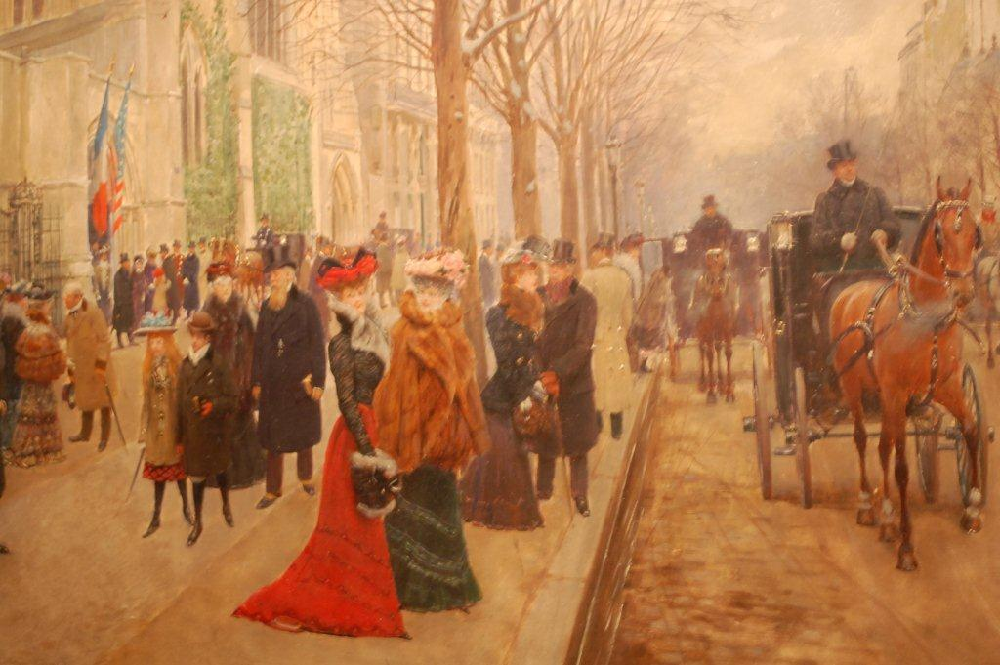

Home
. A série de burgueses em trajes formais representa um contraste com sua obra anterior Une baignade à Asnières. Suas obras quase complementares criam uma visão das diversões parisienses. Muitos especialistas indicam que as telas teriam sido pintadas para serem expostas em conjunto. Algo que nunca ocorreu, devido à grande diferença entre elas.


